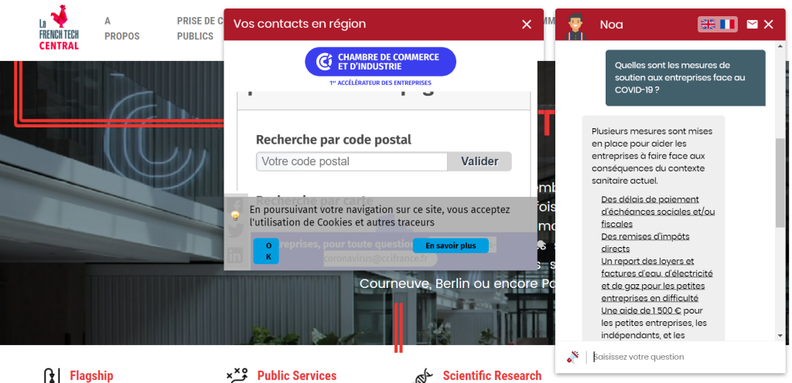

Innovation Technologique au Service de l'Administration :ChatBot NOA dans la French Tech


ChatBot NOA
- Categorie: French Tech Central
- Pour: : Préfecture de la région d’Île-de-France
- Projet URL: https://french-tech-central.com/lancement-du-chatbot-noa-nous-orienter-dans-ladministration/
Présentation de NOA :
Le ChatBot NOA, acronyme de « Nous orienter dans l'Administration », émerge de l'initiative de la préfecture de la région d'Île-de-France, jouant un rôle majeur en tant qu'acteur et interlocuteur privilégié des start-ups au sein de la French Tech Central à Station F. Conscient des besoins réels des entrepreneurs, NOA se positionne comme un canal direct pour transmettre les demandes d'amélioration et développer des solutions adaptées. Cette démarche s'inscrit dans l'engagement continu envers l'efficacité et l'innovation au sein de la French Tech Central.
Accomplissements de NOA depuis son lancement:
voici une liste détaillée des grandes étapes que vous avez mentionnées et d'autres qui pourraient contribuer à la perfection du projet
Définition des Objectifs :
Définition des Scénarios Conversationnels :
Paramétrage des Moteurs de Reconnaissance et de Traitement du Langage et du ML :
Tests et Entraînement du Bot :
Développement d'un Forum Dédié en PHP :
Installation sur 6 Sites Stratégiques :
Évolution du ChatBot et de son IA :